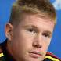

About 167,000,000 results (0.73 seconds)
Lionel Messi
Footballer
https://en.wikipedia.org/wiki/Lionel_MessiLionel Messi- Wikipedia
21 hours ago- Lionel Andrés Messi Also known as Leo Messi,
is an Argentine professional footballer who plays as a forward for Ligue 1 club Paris Saint-Germain and ...2004-2021 Barcelona
Number :30
2021-: Paris Saint-Germain
Positions: Forward
Top Stories
News about Lionel Messi
About
Lionel Andrés Messi, also known as Leo Messi, is an
Argentine professional footballer who plays as a
forward for Ligue 1 club Paris Saint-Germain
and captains the Argentina national team. Wikipedia
Born: 24 June 1987 (age 35 years), Rosario, Argentina
Current teams: Argentina national football team (#10 /
Forward), Paris Saint-Germain F.C. (#30 / Forward)
Height: 1.69 m
Spouse: Antonela Roccuzzo (m. 2017)
Salary: 41 million USD (2022)
Shoe size: 10
Children: Mateo Messi Roccuzzo, Thiago Messi Roccuzzo, Ciro Messi Roccuzzo
Feedback
StatsArgentina
League Matches Goals
World Cup 3 2
2022
World Cup Qualifiers 15 7
2020-22
Copa América 7 4
2021
Profile


Instagram Youtube Facebook People also search for
.jpg)
 
Cristino Ronaldo Neymar Kevin De Brune Trending Kylian Mbappe
 Marca
Marca